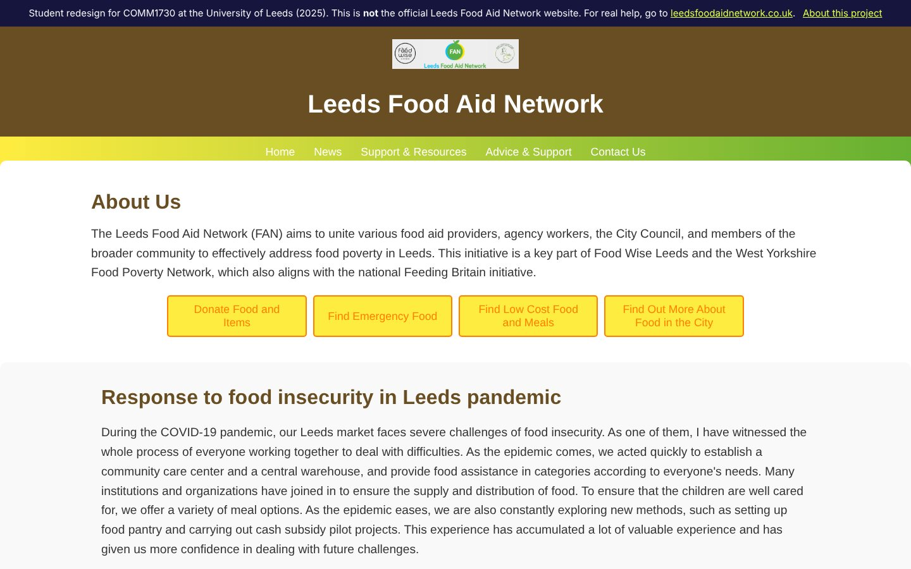
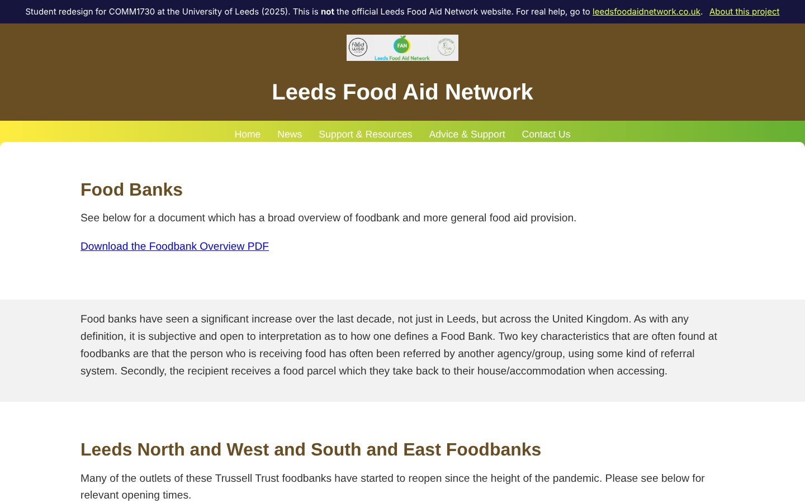
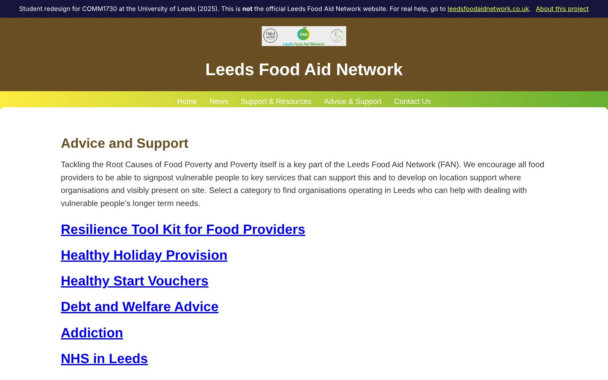
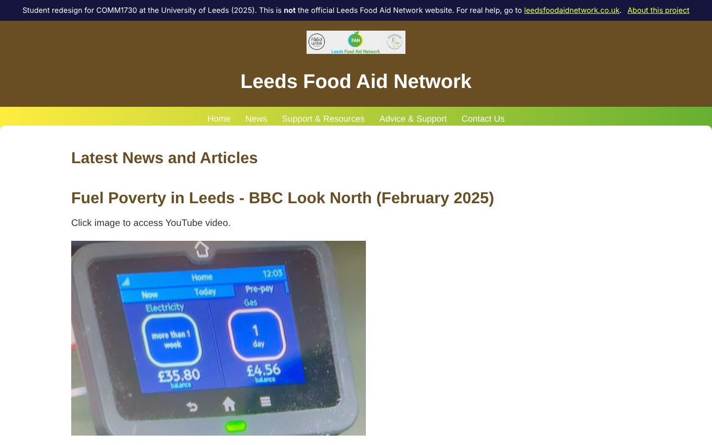
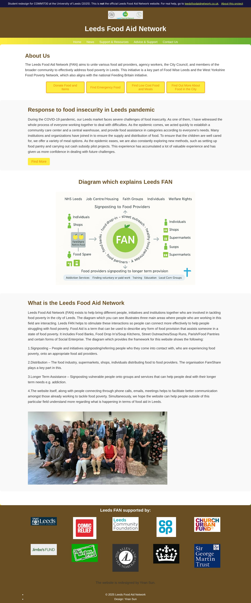

Leeds Food Aid Network
The Leeds Food Aid Network brings together food aid providers, agency workers, Leeds City Council and volunteers to tackle food poverty in Leeds. Its website has to serve people looking for help as well as donors and volunteers. I evaluated how well it does that, then redesigned and rebuilt it.

Who it’s for
Three groups use the site: people looking for food support or advice, people who want to donate food, and volunteers. Each needs to understand quickly what the site offers and how to act on it.
How I evaluated it
- Heuristic evaluation against Nielsen’s ten usability principles
- Krug’s trunk test: landing on a random page and asking “what site is this, and what can I do here?”
- An accessibility checklist based on WCAG 2.1: perceivable, operable, understandable, robust
- User testing: watching people try to find donation and help information
- Code validation with the W3C validator, and testing across browsers
What I found
- Users needed a long time to find how to donate or volunteer, especially when starting from less-visited pages.
- No breadcrumb navigation, so users lost their place in deeper pages.
- Low text contrast on light backgrounds, and long unbroken paragraphs.
- Images without alt text, which shuts out screen-reader users.
- Forms and pop-ups that could not be fully used with a keyboard.
- Invalid HTML, such as unclosed and redundant tags, and weak support for older browsers.
What I changed
- Tasks first. The homepage leads with four buttons for what visitors come to do: donate, find emergency food, find low-cost meals, learn about food in the city.
- Clearer structure. Navigation built around News, Support & Resources, Advice & Support and Contact Us, with dedicated pages for food banks, food pantries, drop-ins, street outreach, and advice topics such as debt, addiction and health.
- Accessibility. Every image on the site has alt text (283 across 20 pages); 187 links carry descriptive labels for screen readers; navigation links show a visible focus style for keyboard users.
- Responsive layout with breakpoints for tablet and phone, and a back-to-top button on every page.




Looking back
Not every recommendation from my evaluation made it into the build. Breadcrumb navigation is still missing, and on narrow phones the main menu runs off the screen, which is exactly the kind of problem my own evaluation would flag. If I rebuilt it now, I would start from the phone layout and test with real users before and after, rather than only before.
Note
This was a student exercise for academic assessment. It is not affiliated with the Leeds Food Aid Network, and the archived site is labelled as such and hidden from search engines.